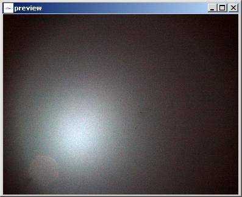

The class CalibrateImage provides a tool for intensity calibration using 'black' and 'white' images.
Description:
This class is used for calibrating raw image values using black and white reference images.
The callibration proccess will take take 3 images, a black image (e.g.,
taken with the camera lens cap on), a white image (e.g., an image of a perfect white background with 100% reflectivity),
and the image that needs callibration.
If no black image is specified, the black is assumed to be 0 everywhere.
The dialog for choosing the three image files and vieweing each file is shown below.
Example of a raw image:
Example of a black image:
Example of a white image:

Once the images are specified, the calibration is executed using the following formula.
calibrated pix[i, j] = { 1 if original pix[i, j] >= white pix[i, j],
0 if original pix[i, j] =< black pix[i, j],
(original pix[i, j] - black pix[i, j]) / (white
pix[i, j] - black pix[i, j]) else;
This will result in a calibrated image with values between 0 and 1.
The execution is triggered by clicking the buttom "Calibrate".
After previewing the calibrated image (button 'Preview'), a user can save the calibrated image (button 'Save') or apply it to the main frame for further processing (button 'Apply'). The dialog is closed with the button 'Close'.
Authors: Rob Kooper, T.J. Alumbaugh, Peter Bajcsy.